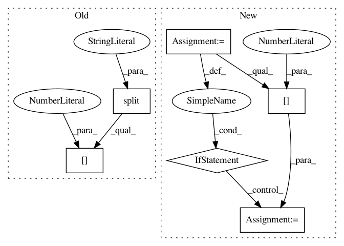

f2889ca90ddd60b19070b7e8fbcb0867ae4c47ed,setup.py,,,#,25
Before Change
gpu_available = len(out) > 0
// check python version
py3_ver = int(platform.python_version().split(".")[1])
// Tensorflow version (make sure CPU/MKL/GPU versions exist before changing)
tf_version = "1.12.0"
After Change
gpu_available = len(out) > 0
// Tensorflow version (make sure CPU/MKL/GPU versions exist before changing)
for r in install_requirements:
if r.startswith("tensorflow=="):
tf_version = r.split("==")[1]
// default TF is CPU
chosen_tf = "tensorflow=={}".format(tf_version)
// check system is linux for MKL/GPU backends
if "linux" in sys.platform:
system_type = "linux"
In pattern: SUPERPATTERN
Frequency: 3
Non-data size: 6
Instances
Project Name: NervanaSystems/nlp-architect
Commit Name: f2889ca90ddd60b19070b7e8fbcb0867ae4c47ed
Time: 2019-05-01
Author: peter.izsak@intel.com
File Name: setup.py
Class Name:
Method Name:
Project Name: NifTK/NiftyNet
Commit Name: 306796bfe38c20f4189e841c358cbd2cfb74ca6a
Time: 2017-04-03
Author: l.fidon@ucl.ac.uk
File Name: util.py
Class Name:
Method Name: list_modality
Project Name: streamlit/streamlit
Commit Name: 3e96b208fe5bc38223eb453b68a03dae51a33544
Time: 2018-10-22
Author: thiagot@gmail.com
File Name: lib/streamlit/caseconverters.py
Class Name:
Method Name: to_lower_camel_case